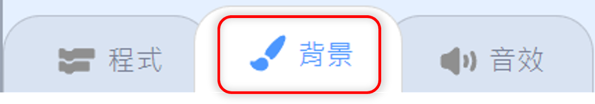

Scratch3.0有線上編輯器與離線編輯器二種。
線上編輯器是位於Scratch官網中，只要開啟官網（https://scratch.mit.edu/），點按左上方Logo右側的第一個連結–Create創造，不管是不是會員，都可以直接開啟線上編輯器，即刻在網頁上編輯。如果你登錄了會員帳號，那麼在編輯程式時，便可以使用「背包」功能來搬移腳本，而編輯的程式還可以直接儲存在Scratch官網的雲端上，更可以透過『分享』按鈕將自己的作品發布到網路上。
離線編輯器，顧名思義就是在沒有網路連線的環境中就可以使用。必須先從官網中下載軟體，然後安裝到自己的電腦中。它的主要操作介面與線上編輯器是一樣的，有差別僅是在沒有用戶資訊、無法分享、沒有背包功能以及無法變更編輯器的顏色。以這種方式來操作，可以不用在乎網路連線的品質，因為它是直接在你的電腦中執行，也因為如此，更要隨時儲存檔案，才能避免檔案丟失。
ps.目前線上編輯器的版面顏色已改成紫色，而且還能選擇去飽和色的面板，但離線編輯器還是一樣的天空藍色。
Scratch3.0的編輯器可分成四大區塊，分別是⑴工具欄列 ⑵舞台區 ⑶角色背景區 ⑷主要編輯區。所處位置如圖示。

- ① 功能表列⇨語言、檔案、編輯、教程
- ② 專案資訊⇨專案名稱、分享按鍵、頁面切換按鍵
- ③ 用戶資訊⇨我的東西、個人頭像（登錄）
- ④ 背包（僅登錄線上編輯器才有）
- ① 有程式啟動（綠旗）與停止按鍵
- ② 呈現程式執行結果的地方
- ① 角色區⇨編輯角色屬性區、角色清單、增添角色
- ② 背景區⇨當前舞臺背景、背景數量、增添背景

- ① 程式編輯⇨積木類別、添加擴展按鍵、積木清單窗格、腳本編輯區
- ② 造型(背景)編輯⇨造型(背景)清單窗格、增添造型(背景)、圖像編輯器
- ③ 音效編輯⇨聲音清單窗格、增添音效、聲音編輯器

新增角色按鈕（角色區）
新增造型按鈕（造型清單窗格）
新增音效按鈕（在聲音清單窗格中）
啟動與停止按鈕

分頁選單按鈕（主要編輯區切換）

新增背景按鈕（背景區與背景清單窗格各一個）

添增擴展積木按鈕
舞臺顯示模式切換紐

放大縮小還原按鈕

下圖是除了背包外，將未登錄線上編輯器、已登錄線上編輯器及離線編輯器三者的工具欄列排列擺放的比較圖。

 位在工具欄列的左邊，是所有用戶都可見的。
位在工具欄列的左邊，是所有用戶都可見的。

由左至右分別是：Scratch Logo、語言、檔案、編輯以及官方教程。
- ⓐScratch Logo：點按該Logo圖示會將瀏覽器指向Scratch主頁。它不會另開新頁，而是會替換掉現有編輯器頁面。因此會跳出一提示框，在你未做決定之前，都無法操作原編輯器。（此功能在離線編輯器中無作用）
- ⓑ語言選單：是一個"地球"圖示，可以選擇編輯器的語言。如已登錄帳號，就會顯示使用者預設的語言。
- ⓒ檔案選單：有三選項，分別是新建、上傳與儲存。是專案新建、上傳與下載存檔的地方。
- ⓓ編輯選單：有復原（恢復最後刪除的項目）以及開啟加速模式。當打開加速模式時，在舞台上方「停止按鍵」旁會出現圖示和文字。
- ⓔ官方教程：是一個帶有“燈泡”的圖示，點按它將會進到Scratch官方教程頁面。（離線編輯器也有）
 位在工具欄列的中間，功能表列的右邊。
位在工具欄列的中間，功能表列的右邊。

由左至右分別是：專案名稱、分享按鍵以及頁面切換按鍵。
💥用戶只能對自己的專案進行重命名、共享、保存和編輯。
- 專案名稱：（線上編輯器未登錄不顯示）會顯示當前專案的名稱。點按它可以更改專案的名稱，如使用線上編輯器時，還會自動更新瀏覽器頁面選項卡上顯示的名稱。（離線編輯器無自動更新顯示名稱功能）。
- 分享按鍵：（線上編輯器未登錄及離線編輯器不顯示）是一個橙色的分享按鈕，可將專案分享到Scratch網站。
- 頁面切換按鍵：（線上編輯器未登錄及離線編輯器不顯示）這個按鍵，連同一個圖標，在保存後將編輯器切換到專案頁面。

未登錄時會有「創建帳號」和「登入」二個按鈕；登錄後則會變成「我的東西」、 「用戶頭像」和「用戶名稱」。
- 創建帳號：創建一個Scratch帳戶。
- 登入按鍵：登入Scratch線上編輯器。
- 我的東西：使用鼠標指針點按圖標時，會將網頁指向"我的東西"。當鼠標懸停在上面時，它的顏色會變深，表示它可以被點擊。"我的東西"是網站的一項功能，其中包含登錄用戶的所有Scratch專案，包括共享的和非共享的。該頁面不會在新分頁中打開，但會替換目前的編輯器。
- 用戶頭像：要到「個人資料」處設定。
- 用戶名稱：登入後，用戶名會位在最右側。點按它將顯示一個下拉菜單，其中包含了：個人資料、我的東西、帳戶設定和登出。
 位在編輯器左邊的最下方，只有使用線上編輯器並登錄後才有此功能。
位在編輯器左邊的最下方，只有使用線上編輯器並登錄後才有此功能。

- 這是Scratch的一項功能，允許用戶在不同專案之間移動角色、程式積木、造型和聲音。可以將其他專案中的造型、角色、聲音和程式積木拖放到其中，然後輕鬆地將它們拖放到他們的專案中。這可用於創建腳本的多個副本或將腳本添加到不同的專案。
- 要刪除背包中的物件時，只要打開背包，然後在要刪除的物件上按下滑鼠右鍵，然後選擇“刪除”即可。
位在編輯介面的右上部分，是Scratch程式執行呈現的地方。
- 它存放著專案中的背景、角色或聲音。
- 所有角色在舞台上都有特定的位置，但絕對無法在舞台後面移動，因為舞台一定是最下面的那層。
- 左上方功能按鈕「綠旗」是執行程式啟動的； 「紅色八角形」是停止程式執行的。
- 右上方是控制舞台區呈現大小的切換按鈕，由左至右分別是：小舞台、正常模式和全螢幕。
- 除全螢幕狀態外，舞台上的角色可以拖曳移動。
- 舞台區座標的呈現是以正中央為原點 ( 0,0 )，橫向ｘ軸是480px，縱向ｙ軸是360px；原點向右、上為正，原點向左、下為負。

角色背景區位在編輯介面的右側，舞台的下方，可以創建、切換角色或背景，以及管理編輯角色屬性。以下分成「角色」和「背景」二區說明。

- 此窗格位於角色區下方，會呈現所有角色縮圖列表。
- 點按任一縮圖，編輯介面就會切換成該角色的所屬資源（程式、造型、音效），且在縮圖的右上方會有「個別刪除鈕」可以點擊刪除該角色。
- 而使用滑鼠在縮圖上點擊右鍵，可以複製或匯出角色，也可以刪除該角色。
- 角色複製是完全複製，複製後的角色會排列在清單窗格中的最後一位。
- 在角色縮圖上按下滑鼠右鍵是將角色匯出的方式，匯出是完全匯出，副檔名是sprite3。

🔺在角色區的上方，可以編輯角色的屬性。
- 角色名稱：中、英文或數字、符號都可以
- 顯示隱藏切換鈕
- 座標
- 尺寸：預設值100
- 方向：預設值90度（向右）。點擊後會跳出「方向角度選擇面板」，可用滑鼠移動上方的箭頭符號來指示角度。另外，在下方可以設定「角色的迴轉方式」。

- 在角色區右下方，有一個增添角色按鍵，可用來新增角色，共有四種新增方式，如圖所示。
- 從此處可以上傳「角色」物件，可接受的格式副檔是.sprite3、SVG、PNG、JPG、GIF


- 顯示當前舞臺的背景以及專案的背景數量，在下方也有一個增添背景按鍵，可用來新增背景，共有四種新增方式，如圖所示。
- 從此處可以上傳「背景」物件，可接受的格式副檔是SVG、PNG、JPG、GIF
「積木腳本區」就是「主要編輯區」的部分，它是「程式編輯頁面」的內容，當一開啟Scratch編輯器時，它就會顯現。
而透過「分頁選單按鍵」可以選擇要呈現的是「程式編輯頁面」或是「造型（背景）編輯頁面」或是「聲音編輯頁面」。
它又可分成「積木區」與「腳本區」。
「積木區」是點按🅐程式分頁按鈕時，編輯介面最左側的區塊。它包括了：
- 包含了Scratch中的九個類別的積木色塊
- 點擊色塊，該分類的積木就會出現在積木清單窗格中
- 最下方的「添增擴展」按鍵，可以選擇加入擴展類別積木，添加後該類積木圖示會顯示在下方
- 包含了可以拖動到腳本區來編輯的Scratch全部積木
- 積木由上而下按「積木分類」之順序排列
- 可透過點擊「積木分類色塊」來切換積木群，或是使用滑鼠滾動捲軸來上下滑動切換顯示積木
- 當加入擴展積木後，可從分類區下方點擊該類圖示，該類的所有積木就會顯示到清單窗格中
- 透過拖曳方式，將積木移至腳本區進行編輯，而腳本區要刪除的積木，也可以拖曳到此區移除
「腳本區」是點按🅐程式分頁按鈕時，位於積木區與舞臺區中間的區塊。
- 又稱為「程式區」或「工作區」
- 它是專案中，對角色或背景進行腳本編寫的地方
- 在它的右上方會顯示當前正在進行腳本編寫的角色或背景的縮圖
- 右下方是控制積木呈現大小的切換按鈕，由上而下分別是：積木放大、積木縮小、返回預設值
- 積木是透過拼接組合而成
- 直接從「積木區」將積木拖曳過來編輯
- 在此區空白處按下滑鼠右鍵，會有復原、重做、整理積木、添加註解和刪除積木五個功能作用可選
- 刪除積木時，可在積木上按右鍵選擇，也可直接將積木拖曳到「積木區」後放開即可刪除
透過角色點擊「分頁選單」的「造型」按鍵或透過舞臺背景點擊「背景」按鍵，就會進到「主要編輯區」的「造型（背景）編輯」。
它主要分成「清單窗格」和「圖像編輯器」二部分。
此部分先介紹「清單窗格」。
(透過角色點擊)
(透過舞臺背景點擊)
「造型(背景)清單窗格」是位於圖像編輯器的最左邊，角色和背景的顯示型態是相同的。
在「造型(背景)清單窗格」中會將該角色的所有造型或舞臺的所有背景，依序一個個的以略縮圖排列，其順序是依照添增的先後，愈晚添增的會排在最後面，你可以使用滑鼠點擊拖曳來調整其順序，而這順序就是它的造型或背景編號，而在窗格的下方有可以創建新造型或背景用的增添按鍵。
- 從略縮圖上可以看到該造型或背景的各種屬性值，包括其造型（背景）編號、名稱、尺寸、縮小圖以及個別刪除鈕（正被選中才會出現）
- 「清單窗格」會依序排列該角色或舞臺的所有造型或背景。當你用滑鼠點選其中任何一個，該造型或背景的原圖就會出現在「圖像編輯器」的「編輯區」中，你就可以進行編輯。而正被選中的造型或背景，會在其略縮圖的右上方顯示「個別刪除鈕」
- 而使用滑鼠在略縮圖上點擊右鍵，可以複製或匯出，也可以刪除該造型或背景
- 要創建新的造型或背景，就點按窗格下方的增添按鈕。如果要自行繪製時，點按「畫筆」造型按鍵就可在清單最下方建立一個空白圖示，此時繪圖區也是空的，你就可以開始繪製。（預設是向量編輯模式）
- 複製後的造型或背景會排列在清單窗格中該複製編號的下一位（編號+1）。
- 上傳的或從圖庫增添的造型或背景會排列在清單窗格中的最後一位。
- 在造型或背景略縮圖上按下滑鼠右鍵是可以將造型或背景匯出的方式，如果該圖是向量格式，就會匯出成SVG格式，如果是點陣格式，就會會出成JPG格式。
- 從此處可以上傳「造型或背景」物件，可接受的格式副檔是SVG、PNG、JPG、GIF(其中SVG匯入後會是向量圖，其餘是點陣圖)。
這部分將介紹「造型（背景）編輯」中的「圖像編輯器」，在介紹前，我們得先來認識一下Scratch中使用到的二種圖形類型，分別是「向量圖形」和「點陣圖形」。
- 又稱為「矢量圖形」
- 它是將對象儲存為形狀或數學曲線而不是像素
- 這方式會使向量圖形看起來更平滑，因為它們可以無限放大而不會出現像素化
- 但是，無法使用它來儲存照片
- 又稱為「位圖」或「光柵圖形」
- 它將圖像儲存為網格形式的像素陣列
- 這種方式使它們更容易繪製和操作
- 但會導致它們在放大時顯得模糊或像素化
- 在圖像編輯器的下方有切換按鈕
- 任何從點陣圖轉換為向量圖的形狀，都不會轉換為具有塑形點的向量形狀
- 從向量圖轉換為點陣圖後，就不再具有向量圖的屬性，就算再轉回向量圖也是一樣
- 將向量圖轉換為點陣圖時，不再包含任何超出畫布的部分（超出的會消失）
「圖像編輯器」或叫「繪圖編輯器」，是Scratch內建用來建立或編輯、修改角色造型與舞臺背景的程式。
它有二種編輯模式，分別是「向量編輯」與「點陣編輯」，可以自行透過編輯器下方的切換鈕來切換編輯模式。
這二種模式有相同的操作面板，但在可使用的工具上是不同的。由於點陣編輯是在區域上使用像素網格而不是建立線條，因此所有點陣圖編輯的工具圖示也都是像素化的，因為不使用線條，這些圖像又是像素化的，所以點陣編輯的工具就比向量編輯可使用的工具少了些。操作面板可分成三個部分：
① 「功能區」：位於編輯器的上方，分成上下二列，這裡呈現的是圖像編輯時可操作的功能項目，部分功能是二種模式共用的，但有部分功能是向量模式專用的；由於功能項目會因使用不同工具而有所不同，因此，當以滑鼠點擊選擇工具區中的某個工具時，在此區的下橫列就會對應出現可操作在該工具上的功能項目。
②「工具區」：位於編輯器下方左側。在不同的編輯模式下，工具區上的工具是不同的。
③「編輯區」：位於編輯器下方右側。操作圖像編輯的地方，可透過選擇按鍵，放大或縮小此區域。
上圖是「圖像編輯器」的功能區會出現的功能項目，或許有些你沒有看到，那是因為得選擇相對應工具才會出現。而如果出現的功能項目是半透明狀態，則表示該功能在目前狀態下是無法使用的。
🪅填滿：
是指在圖像的內部填滿顏色，這項功能固定於功能區下橫列的最左側。使用滑鼠點擊項目方格，會出現下拉的「顏色選擇面板」，其中包含三個滑桿選擇項目：顏色、彩度和亮度。
🔹顏色：使用滑桿來移動選擇顏色。範圍值是0~100
🔹彩度：指顏色的飽和度。範圍值是0～100，值100是預設，值50顏色變淡，值0可能就只剩白色或灰白色
🔹亮度：就是明度，指顏色的深淺。範圍值是0～100，值0是全黑，值100是全白
🔹不填色：此用途在於製作透明色
🎉吸取顏色：「顏色選擇面板」的右下方有一個「滴管」圖示，可以讓您從目前正編輯的圖像中選擇顏色。它將放大鼠標指針附近的區域，外框色是你鼠標懸停的顏色，點按就可以選擇該顏色。

🎉漸層色：
🅐在「顏色選擇面板」上方，有四個方格，各表示一種混色模式。由左至右依序是純色、左右漸層、上下漸層、輻射漸層
🅑當你選擇了純色外的其他模式，可以讓您進行兩種選取顏色的混色，此時會面板上會多出二個用來混色的顏色方格在左右二側，按一下任一個顏色方格都可以單獨編輯。其混色結果可在原功能項目「填滿」中預覽
🅒這樣二個顏色就會混和形成漸層色
🅓若點按二顏色方格間的「交換」圖示，就可以交換二色的位置
🅔而如果將其中一色改換成面板左下角「紅色斜線」圖示的【不填色】，那麼就會產生一個純色的淡入淡出的效果
(點按二顏色方格間的「交換」圖示後，顏色位置改變)
(將其中一色換成「不填色」)
🪅文字字體：點按右側倒三角圖示會出現可供選擇的下拉選單，有中文。
🪅複製及貼上
🪅復原及重做
🪅刪除
🪅翻轉：有水平翻轉和垂直翻轉二種
🪅更改造型名稱：在舞臺背景模式中，也一樣顯示為「造型」，不知是啥原因
🎠外框填色：
在「填滿」項目右側有一個「外框」功能項目，是用來將輪廓外框填色的。在它右側的是調整框線粗細的項目。操作方式與「填滿」項目相同
🎠圖層位置切換：
在功能區上橫列的右側有四個項目，是用來調整物件之間的上下層關係（線條也可以調整）
🎠群組：
當您需要同時移動許多物件時，將它們建立群組是很有用的。建立與解散之動作皆可多次重覆
🎠圓弧和尖角：
當使用「重新塑形」工具時，會出現這二個功能項目，可以用來使線條彎曲（如橢圓形）或尖形（如矩形）
🔸向量編輯模式之工具項（綠線上是該工具對應的功能項目）
🪁選取：
是鼠標指針工具，用於修改對象的位置、拉伸或壓縮對象或旋轉對象
🪁筆刷：
可繪製雲規線，透過輸入數字或點按上下箭頭來調整粗細
💡雲規線：在向量編輯中使用筆刷繪製出的線稱為「雲規線」，也稱作「樣條線」，是一種可以變形的平滑曲線，可以使用塑形工具來進行修改。它會自動匹配現有雲規線的顏色，並將這些線連接在一起
🪁填滿：
選擇它，然後點按任何物件的內部或外框，就可以當前的顏色來填滿。（與點陣編輯的填滿不同，它無法填滿背景的空白區域）
🪁線條：
可繪製直線。（外框操作）
🪁圓形：
可繪製實心或空心的圓形或橢圓形
🪁方形：
可繪製實心或空心的長方形或正方形
🪁重新塑形：
透過用滑鼠抓住點並移動它們來彎曲或更改繪圖區中線條的形狀。使用它後，再點按線條可增加塑形點
🪁擦子：
它的擦除區域是圓形，透過輸入數字或點按上下箭頭來調整。它與點陣編輯的擦子不同，因為它會留下外框線
🏀提醒：
1.在向量模式下使用擦子，只能擦除原本就是向量格式的圖形，或是使用向量工具繪製出的圖形，如果是經過編輯模式切換後的圖形就無法擦除
2.在向量模式下使用擦子，若只是要擦掉其中一個物件中的部分，要先將該物件選取，然後再使用擦子擦除，若沒有先選取，則只要是擦子有碰到的部分（不論疊了幾層），都會消失
🪁文字：
可在繪圖區上輸入文字，完成後可以調整大小、選擇字體
🔸點陣編輯模式之工具項（紅線上是該工具對應的功能項目）
📌筆刷：
可任意繪圖，透過輸入數字或點按上下箭頭來調整粗細
📌線條：
可繪製直線，透過輸入數字或點按上下箭頭來調整線條粗細
📌圓形、方形：
可繪製實心或空心的圓或矩形。繪製空心圖案時，可透過輸入數字或點按上下箭頭來調整外框粗細
📌文字：
可在繪圖區上輸入文字，並調整大小、選擇字型。(一旦離開選取狀態後，就無法再更改)
📌填滿：
可將顏色填滿封閉區域，包含整個繪圖區背景
📌擦子：
可透過輸入數字或點按上下箭頭來調整擦子區域大小。它與向量編輯是不同的，因為它不會留下外框
📌選取：
可以使用滑鼠將部分的圖案框起來，該區域周圍會出現一個藍色框，接著進行移動、拉伸、壓縮、旋轉、翻轉、複製或刪除
- 當在清單窗格中選擇任一造型或背景時，該圖像就會顯示在繪圖區中
- 可以點按繪圖區右下角的放大鏡工具來放大或縮小繪圖區（含圖像）。帶“+”的放大，帶“-”的縮小。“=”將縮放設置為100%。若使用滑鼠滾輪並同時按住鍵盤上的 Ctrl 鍵，是縮放圖像的快捷方式。（程式編輯區亦適用）
- 在向量編輯模式下點選物件或在點陣編輯模式下使用「選取」工具選擇物件後，都可以透過鍵盤上的方向鍵來對物件進行微調移動，其精準度較使用華以拖曳移動還要高。如果同時按下 shift 鍵，則移動距離將放大15倍
- 要繪製直線、圓形或正方形時，可在拖曳鼠標的同時按住鍵盤上的shift 鍵。(向量、點陣編輯皆適用)
- 使用滑鼠滾輪可以使繪圖區中的圖像快速垂直平移，但如果同時按住鍵盤上的shift 鍵，就可以水平平移。（程式編輯區亦適用）
- 在繪圖區要調整對象的大小，可以將對象選取然後拉動藍色框線上的點，但它總是相對式的放大縮小，如果要讓對象可以從其中心來放大縮小調整的話，可在拉動時，同時按住鍵盤上的 Alt 鍵來調整大小
- 在向量編輯模式中，如果想要快速擦掉對象的大塊面積時，可以將要擦除的部分移到舞台邊緣外，然後切換成點陣編輯，舞台外的部分就不見了，再切回到向量編輯模式即可
- 在點陣模式下操作繪圖或建立文字時，都要注意所有的動作均須在放開滑鼠按鍵前或選取狀態消失前完成，否則，一旦放開滑鼠按鍵或離開了選取狀態，則圖案或文字就會被像素化，邊緣產生鋸齒狀，無法再任意編輯
「聲音編輯器」是Scratch的內置功能，可以透過點按角色或背景的「音效」分頁按鈕進入。它可以讓使用者編輯和重新混合聲音。
它主要分成「聲音清單窗格」和「聲音編輯器」二區塊。
此部分先介紹「聲音清單窗格」。
「聲音清單窗格」是位於聲音編輯器的最左邊。
在「聲音清單窗格」中會將該角色的所擁有音效，依序一個個的以圖標排列，其順序是依照添增的先後，愈晚添增的會排在最後面。你可以使用滑鼠點擊拖曳來調整其順序，而這順序就是它的音效編號，而在窗格的下方有可以添增聲音的按鍵。
🔸從圖標上可以看到該音效的各種屬性值，包括其音效編號、名稱、長度秒數(以秒計算)、音效圖示(小喇叭)以及個別刪除鈕（正被選中才會出現）
🔸「清單窗格」列出了所選角色或背景的所有音效。要在聲音編輯器中編輯不同的音效時，只需從窗格中點按所需的音效。（正被選中的音效，其右上方會有一個「個別刪除鈕」）
🔸而使用滑鼠在圖標上點擊右鍵，可以複製或匯出，也可以刪除該音效
🔸要增添新的音效，就點按窗格下方的增添按鈕。如果要自行錄製聲音時，選擇「麥克風」圖示按鍵，畫面就會彈跳出錄製的視窗，你就可以開始錄製。（詳細錄製方式請見⒑聲音錄製）
💥複製後的音效會排列在清單窗格中該複製編號的下一位（編號+1）。
💥上傳的或從音效庫增添的音效會排列在清單窗格中的最後一位。
💥在聲音圖標上按下滑鼠右鍵是可以將聲音匯出的方式，匯出後會是WAV格式。
💥從此處可以上傳「聲音」物件，可接受的格式副檔是WAV和MP3。
「聲音編輯器」可分成聲音軌跡面板、處理工具及播放工具及三部分。
當你在「聲音清單窗格」中點選了一個聲音，則該聲音的軌跡就會出現在編輯器的「聲音軌跡面板」中。每個聲音的軌跡圖都會不同，它是根據聲音音頻的波動繪製的。
當我們要對聲音進行編輯時，就可以直接在聲音軌跡圖上選取、複製、貼上或刪除。
「聲音處理工具」位於編輯器的上方，主要是對聲音進行複製、貼上和刪除。
🎙️當前音效名稱：可以在此更改音效的名稱
🎙️復原/重做：回復到上一個動作/重做上一個動作
🎙️複製聲音段：這會複製聲音被選定部分，如果沒有選擇，則複製整段聲音
🎙️貼上聲音段：這會將任何複製的聲音段黏貼到目前聲音的末尾
🎙️複製：這會在音效清單中新增一個與目前聲音一模一樣的新聲音
🎙️刪除聲音段：這會將選定的聲音段刪除。（若按下鍵盤上shift + Del 則會刪除掉未被選取的部分）
將滑鼠移到脈衝軌跡上的要選擇之聲音段起頭，鼠標就會從箭頭變成手指，此時按下滑鼠左鍵拖動到要選擇之聲音段末尾，再放開滑鼠鍵，就會形成如左圖一樣的藍色區塊，你可以刪除它或是複製聲音段、貼上聲音段。
「聲音播放工具」位於聲音脈衝軌跡的下方。
操作「聲音播放工具」的過程都會在聲音脈衝軌跡上反應出來。
使用這些工具操作時，效果都是會一直累計上去的。
🎙️「快播」與「慢播」是相對的，而且聲音效果會隨點按次數累計。也就是說，按一次「快播」是+1V，再按一次「快播」又+1V，再按一次「快播」又再+1V，此時的聲音就是+1V+1V+1V=+3V的效果，那接著按一次「慢播」是-1V，那播出的聲音就是+3V-1V=+2V，也就是與按二次「快播」時的聲音相同，那如果再連續按二次「慢播」呢？那就會變成+2V-1V-1V=0V，所以又回到正常聲音速度的狀態了。
🎙️「快播」與「慢播」除了聲音變化外，聲音的脈衝軌跡也會跟著改變。
🎙️「響亮」與「輕柔」是相對的，而且聲音效果會隨點按次數累計。與「快播」、「慢播」的關係相同，就不再贅述
🎙️「響亮」與「輕柔」除了聲音變化外，聲音的脈衝軌跡也會跟著改變
🎙️「響亮」與「輕柔」一般來說是有極限的。（也就是說，聲音的大聲是有極限，而小聲就是變無聲）
🎙️「靜音」時，音量為0，脈衝軌跡會成為一橫線
🎙️「淡入」是將聲音的前段變小聲，「淡出」則是後段變小聲
🎙️「反轉」就是將聲音前後對調
🎙️「機器」會將聲音變成如同機器人的音質
透過聲音錄製，可以在專案中使用自己的聲音當音效喔！
錄製方式共可分成三大步驟：準備、錄音、確認
點按❶「新增音效按鈕」中的➋「自行錄製」，會跳出➌錄製視窗，此時可試著發出一些聲音，➍檢測音頻顯示器是否有在跳動。
點按❶「錄製」按鈕就可以開始錄製聲音，同時間脈衝軌跡會隨聲音出現變化，按下➋「停止錄製」按鈕則會結束錄製，接著➌轉換成修剪儲存視窗。
在修剪儲存視窗你可以先按下❶「播放」按鈕，試聽你錄製的結果；如果不滿意可按下➋「重新錄音」按鈕來重新錄製；否則，你可以➌按住滑鼠然後拖動橘色半透明的裁切範圍選擇，將不要的聲音段覆蓋（沒被覆蓋的聲音段，就是要保留下來的），再聽看看有沒有問題，都確定後，按下➍「儲存」按鈕，就會切換回聲音編輯器畫面，而➎聲音清單中會多了一個聲音圖標，➏面板就顯示新錄製的聲音軌跡。此時你可以給這聲音一個➐新的名字。